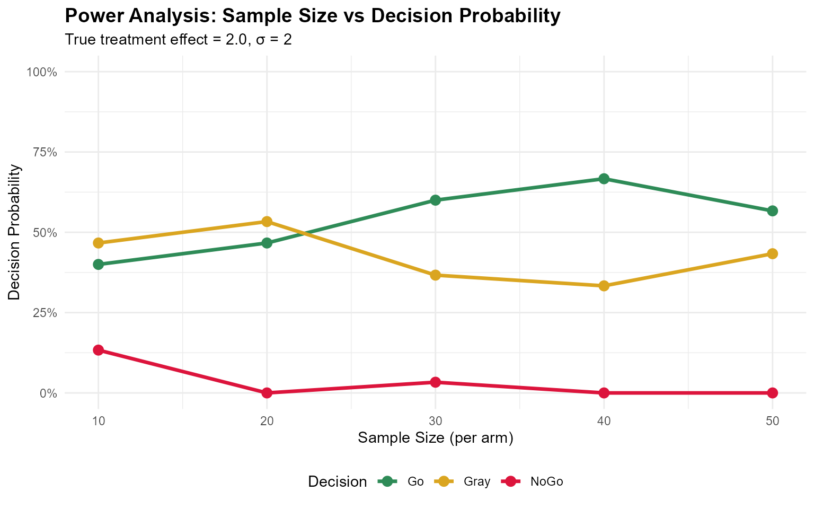

Bayesian Decision Making for Continuous Endpoints
Source:vignettes/continuous-endpoints.Rmd
continuous-endpoints.Rmd
library(BayesianQDM)
library(dplyr)
#>
#> Attaching package: 'dplyr'
#> The following objects are masked from 'package:stats':
#>
#> filter, lag
#> The following objects are masked from 'package:base':
#>
#> intersect, setdiff, setequal, union
library(tidyr)
library(ggplot2)
library(purrr)Introduction
This vignette demonstrates Bayesian decision-making for continuous endpoints using the BayesianQDM package. Continuous endpoints (e.g., change in biomarker levels, symptom scores, or quality of life measures) are common in clinical trials and require different statistical approaches than binary endpoints.
Theoretical Background
Statistical Framework
For continuous endpoints, we assume: - Outcomes follow normal distributions with unknown means and variances - Prior distributions on parameters (Normal-Inverse-Chi-squared or vague priors) - Posterior distributions follow t-distributions
Calculation Methods
The package provides three computational approaches:
- NI (Numerical Integration): Exact calculation using convolution
-
WS (Welch-Satterthwaite): Fast approximation for
unequal variances
- MC (Monte Carlo): Simulation-based approach
For this vignette, we focus on the fastest methods (NI and WS) to ensure reasonable build times.
Basic Examples
Posterior Probability
# Calculate posterior probability using NI method
posterior_prob <- pPPsinglecontinuous(
prob = 'posterior',
design = 'controlled',
prior = 'vague',
CalcMethod = 'NI',
theta0 = 1.5,
n1 = 20, n2 = 20,
bar.y1 = 5.2, bar.y2 = 3.0,
s1 = 2.0, s2 = 1.8
)
cat("Posterior probability that treatment effect > 1.5:", round(posterior_prob, 4))
#> Posterior probability that treatment effect > 1.5: 0.1323Comparing Calculation Methods
# Compare NI and WS methods
prob_ni <- pPPsinglecontinuous(
prob = 'posterior', design = 'controlled', prior = 'vague', CalcMethod = 'NI',
theta0 = 1.5, n1 = 15, n2 = 15, bar.y1 = 5, bar.y2 = 3, s1 = 2, s2 = 2
)
prob_ws <- pPPsinglecontinuous(
prob = 'posterior', design = 'controlled', prior = 'vague', CalcMethod = 'WS',
theta0 = 1.5, n1 = 15, n2 = 15, bar.y1 = 5, bar.y2 = 3, s1 = 2, s2 = 2
)
cat("NI method:", round(prob_ni, 4), "\n")
#> NI method: 0.2572
cat("WS method:", round(prob_ws, 4), "\n")
#> WS method: 0.2496
cat("Difference:", round(abs(prob_ni - prob_ws), 6), "\n")
#> Difference: 0.00763Go/NoGo/Gray Decision Probabilities
Basic Usage
# Calculate Go/NoGo/Gray probabilities
result <- pGNGsinglecontinuous(
nsim = 50, # Small nsim for vignette speed
prob = 'posterior',
design = 'controlled',
prior = 'vague',
CalcMethod = 'WS',
theta.TV = 1.5, theta.MAV = 0.5, theta.NULL = NULL,
nMC = NULL, gamma1 = 0.8, gamma2 = 0.3,
n1 = 20, n2 = 20, m1 = NULL, m2 = NULL,
kappa01 = NULL, kappa02 = NULL, nu01 = NULL, nu02 = NULL,
mu01 = NULL, mu02 = NULL, sigma01 = NULL, sigma02 = NULL,
mu1 = 5.0, mu2 = 3.0, sigma1 = 2.0, sigma2 = 1.8,
r = NULL, ne1 = NULL, ne2 = NULL, alpha01 = NULL, alpha02 = NULL,
bar.ye1 = NULL, bar.ye2 = NULL, se1 = NULL, se2 = NULL,
seed = 123
)
print(result)
#> mu1 mu2 Go Gray NoGo
#> 1 5 3 0.46 0.52 0.02Operating Characteristics
Evaluating Across Treatment Effects
# Evaluate OC across different treatment effects
mu1_values <- seq(3, 7, by = 1)
oc_results <- do.call(rbind, lapply(mu1_values, function(m1) {
result <- pGNGsinglecontinuous(
nsim = 30, # Reduced for vignette speed
prob = 'posterior', design = 'controlled', prior = 'vague', CalcMethod = 'WS',
theta.TV = 1.5, theta.MAV = 0.5, theta.NULL = NULL,
nMC = NULL, gamma1 = 0.8, gamma2 = 0.3,
n1 = 30, n2 = 30, m1 = NULL, m2 = NULL,
kappa01 = NULL, kappa02 = NULL, nu01 = NULL, nu02 = NULL,
mu01 = NULL, mu02 = NULL, sigma01 = NULL, sigma02 = NULL,
mu1 = m1, mu2 = 3, sigma1 = 2, sigma2 = 2,
r = NULL, ne1 = NULL, ne2 = NULL, alpha01 = NULL, alpha02 = NULL,
bar.ye1 = NULL, bar.ye2 = NULL, se1 = NULL, se2 = NULL,
seed = 123
)
data.frame(
mu1 = m1,
treatment_effect = m1 - 3,
go_prob = result$Go,
nogo_prob = result$NoGo,
gray_prob = result$Gray
)
}))
print(oc_results)
#> mu1 treatment_effect go_prob nogo_prob gray_prob
#> 1 3 0 0.0000000 0.96666667 0.03333333
#> 2 4 1 0.0000000 0.23333333 0.76666667
#> 3 5 2 0.6000000 0.03333333 0.36666667
#> 4 6 3 0.9333333 0.00000000 0.06666667
#> 5 7 4 1.0000000 0.00000000 0.00000000Visualizing Operating Characteristics
# Reshape for plotting
plot_data <- oc_results %>%
pivot_longer(cols = c(go_prob, gray_prob, nogo_prob),
names_to = "decision",
values_to = "probability") %>%
mutate(Decision = case_when(
decision == "go_prob" ~ "Go",
decision == "gray_prob" ~ "Gray",
decision == "nogo_prob" ~ "NoGo"
))
ggplot(plot_data, aes(x = treatment_effect, y = probability, color = Decision, linetype = Decision)) +
geom_line(linewidth = 1.2) +
geom_point(size = 3) +
scale_color_manual(values = c("Go" = "#2E8B57", "Gray" = "#DAA520", "NoGo" = "#DC143C")) +
scale_linetype_manual(values = c("Go" = "solid", "Gray" = "dashed", "NoGo" = "dotted")) +
labs(
title = "Operating Characteristics: Decision Probabilities",
subtitle = "Sample size = 30 per arm, σ = 2",
x = "True Treatment Effect (μ₁ - μ₂)",
y = "Decision Probability",
color = "Decision"
) +
scale_y_continuous(limits = c(0, 1), labels = scales::percent) +
theme_minimal() +
theme(
plot.title = element_text(face = "bold", size = 14),
legend.position = "bottom"
)Prior Specification
Informative vs Vague Priors
# Vague prior
prob_vague <- pPPsinglecontinuous(
prob = 'posterior', design = 'controlled', prior = 'vague', CalcMethod = 'NI',
theta0 = 1.5, n1 = 15, n2 = 15, bar.y1 = 5, bar.y2 = 3, s1 = 2, s2 = 2
)
# Informative prior (Normal-Inverse-Chi-squared)
prob_informative <- pPPsinglecontinuous(
prob = 'posterior', design = 'controlled', prior = 'N-Inv-Chisq', CalcMethod = 'NI',
theta0 = 1.5, n1 = 15, n2 = 15,
kappa01 = 5, kappa02 = 5, nu01 = 10, nu02 = 10,
mu01 = 5, mu02 = 3, sigma01 = 2, sigma02 = 2,
bar.y1 = 5, bar.y2 = 3, s1 = 2, s2 = 2
)
cat("Vague prior: ", round(prob_vague, 4), "\n")
#> Vague prior: 0.2572
cat("Informative prior: ", round(prob_informative, 4), "\n")
#> Informative prior: 0.4126External Control Design
Power Prior with Historical Data
# Incorporating external control data
external_result <- pPPsinglecontinuous(
prob = 'posterior',
design = 'external',
prior = 'vague',
CalcMethod = 'WS',
theta0 = 1.5,
n1 = 20, n2 = 20, # Current trial
bar.y1 = 5.5, bar.y2 = 3.2,
s1 = 2.1, s2 = 1.9,
ne1 = NULL, ne2 = 40, # External control only
alpha01 = NULL, alpha02 = 0.5, # 50% borrowing
bar.ye1 = NULL, bar.ye2 = 3.0, # Historical control mean
se1 = NULL, se2 = 2.0 # Historical control SD
)
cat("Posterior probability with external control:", round(external_result, 4))
#> Posterior probability with external control: 0.0581Sensitivity to Power Prior Parameter
# Test different levels of borrowing
alpha_values <- seq(0, 1, by = 0.2)
borrowing_results <- data.frame(
alpha = alpha_values,
probability = sapply(alpha_values, function(a) {
pPPsinglecontinuous(
prob = 'posterior', design = 'external', prior = 'vague', CalcMethod = 'WS',
theta0 = 1.5, n1 = 20, n2 = 20, bar.y1 = 5.5, bar.y2 = 3.2, s1 = 2.1, s2 = 1.9,
ne1 = NULL, ne2 = 40, alpha01 = NULL, alpha02 = a,
bar.ye1 = NULL, bar.ye2 = 3.0, se1 = NULL, se2 = 2.0
)
})
)
print(borrowing_results)
#> alpha probability
#> 1 0.0 0.10459681
#> 2 0.2 0.07720469
#> 3 0.4 0.06291360
#> 4 0.6 0.05433216
#> 5 0.8 0.04867937
#> 6 1.0 0.04470432
ggplot(borrowing_results, aes(x = alpha, y = probability)) +
geom_line(linewidth = 1.2, color = '#2E8B57') +
geom_point(size = 3, color = '#2E8B57') +
labs(
title = "Sensitivity to Historical Data Borrowing",
x = "Power Prior Parameter (α)",
y = "Posterior Probability",
subtitle = "α = 0: no borrowing, α = 1: full borrowing"
) +
scale_y_continuous(limits = c(0, 1), labels = scales::percent) +
theme_minimal() +
theme(plot.title = element_text(face = "bold"))Sample Size and Power
Power Analysis Across Sample Sizes
# Evaluate optimal sample size for desired operating characteristics
sample_sizes <- seq(10, 50, by = 10)
oc_results_n <- do.call(rbind, lapply(sample_sizes, function(n) {
result <- pGNGsinglecontinuous(
nsim = 30, # Reduced for vignette speed
prob = 'posterior', design = 'controlled', prior = 'vague', CalcMethod = 'WS',
theta.TV = 1.5, theta.MAV = 0.5, theta.NULL = NULL,
nMC = NULL, gamma1 = 0.8, gamma2 = 0.3,
n1 = n, n2 = n, m1 = NULL, m2 = NULL,
kappa01 = NULL, kappa02 = NULL, nu01 = NULL, nu02 = NULL,
mu01 = NULL, mu02 = NULL, sigma01 = NULL, sigma02 = NULL,
mu1 = 5, mu2 = 3, # Assume true effect of 2.0
sigma1 = 2, sigma2 = 2,
r = NULL, ne1 = NULL, ne2 = NULL, alpha01 = NULL, alpha02 = NULL,
bar.ye1 = NULL, bar.ye2 = NULL, se1 = NULL, se2 = NULL,
seed = 123
)
data.frame(
sample_size = n,
go_prob = result$Go,
nogo_prob = result$NoGo,
gray_prob = result$Gray
)
}))
print(oc_results_n)
#> sample_size go_prob nogo_prob gray_prob
#> 1 10 0.4000000 0.13333333 0.4666667
#> 2 20 0.4666667 0.00000000 0.5333333
#> 3 30 0.6000000 0.03333333 0.3666667
#> 4 40 0.6666667 0.00000000 0.3333333
#> 5 50 0.5666667 0.00000000 0.4333333
# Reshape for plotting
power_plot_data <- oc_results_n %>%
pivot_longer(cols = c(go_prob, gray_prob, nogo_prob),
names_to = "decision",
values_to = "probability") %>%
mutate(Decision = case_when(
decision == "go_prob" ~ "Go",
decision == "gray_prob" ~ "Gray",
decision == "nogo_prob" ~ "NoGo"
))
ggplot(power_plot_data, aes(x = sample_size, y = probability, color = Decision)) +
geom_line(linewidth = 1.2) +
geom_point(size = 3) +
scale_color_manual(values = c("Go" = "#2E8B57", "Gray" = "#DAA520", "NoGo" = "#DC143C")) +
labs(
title = "Power Analysis: Sample Size vs Decision Probability",
x = "Sample Size (per arm)",
y = "Decision Probability",
subtitle = "True treatment effect = 2.0, σ = 2"
) +
scale_y_continuous(limits = c(0, 1), labels = scales::percent) +
theme_minimal() +
theme(
plot.title = element_text(face = "bold", size = 14),
legend.position = "bottom"
)
Practical Guidelines
Method Selection
NI (Numerical Integration) - Most accurate - Recommended for final analyses and regulatory submissions - Moderate computational time
WS (Welch-Satterthwaite) - Fast approximation - Good for exploratory analyses and simulations - Very close to NI results in most cases
MC (Monte Carlo) - Flexible but slowest - Use when other methods are not applicable - Requires careful selection of nMC (typically 10,000+)
Summary
This vignette demonstrated:
- Basic probability calculations for continuous endpoints
- Method comparison (NI, WS, MC)
- Go/NoGo/Gray decision framework implementation
- Operating characteristics evaluation
- Prior specification (vague vs informative)
- External control design with power priors
- Sample size and power considerations
The BayesianQDM package provides flexible and rigorous tools for Bayesian decision-making in clinical trials with continuous endpoints.